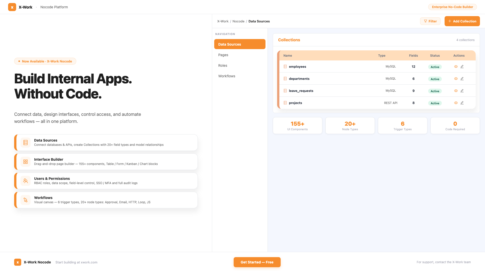
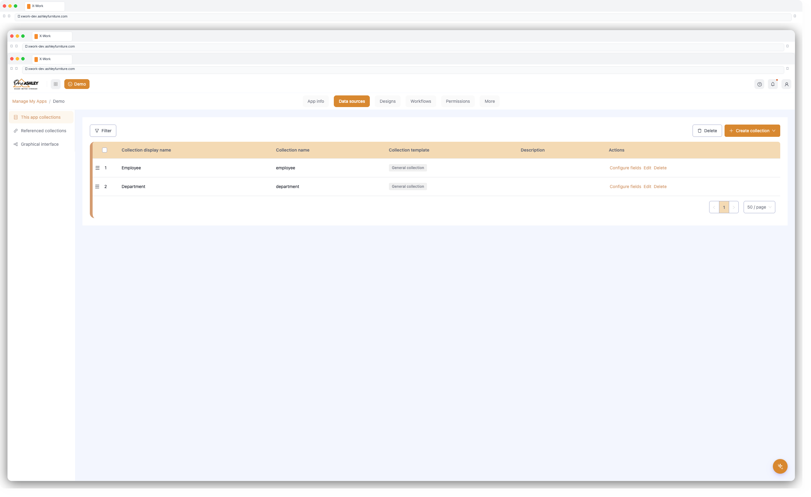
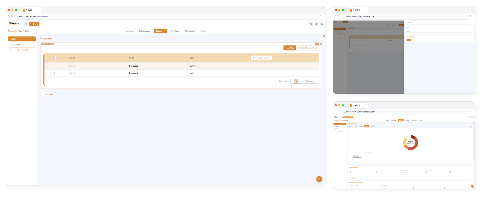

Total control, infinite scalability — empowering our team to swiftly adapt to changes and significantly reduce costs. Skip years of development and millions in investment.

X-Work Platform Overview
Who Is It For?
Audience
How They Use It
Business Analysts
Build data models and reports without IT dependency
Operations Teams
Automate repetitive processes and approval workflows
Product Managers
Rapidly prototype and deploy internal tools
IT Administrators
Manage users, roles, and system integrations centrally
Department Leads
Configure team-specific views and workflows
Core Capabilities
Rapid Application Building
With straightforward operations, you can swiftly create the applications you need.
Centralized Data Management
Unlike other tools, X-Work not only collects data but also centralizes its management, enhancing efficiency.
Adaptable to Various Business Needs
Whether it's simple daily tasks or complex business processes, X-Work caters to all your requirements.
Flexibility and Scalability
Suitable for various business scenarios, it serves as a comprehensive solution for your daily operational needs.
Data Automation and Approval Workflows
X-Work provides robust and flexible data automation and approval workflow capabilities.
AI Empowered Functionality
Leverage AI to enhance automation, insights, and intelligent decision-making.
Core Modules
1. Data Sources
Connect to internal databases or external APIs, define data models, and manage relationships — all through a visual interface.
Key capabilities:
Connect to MySQL databases, REST APIs, and spreadsheet sources
Define collections (tables) with rich field types: text, number, date, file, relation, formula, and more
Set up field validation rules and constraints
Model relationships: one-to-many, many-to-many, belongs-to
Sync data across systems with scheduled or real-time sync

X-Work Data Sources
2. Interface Builder
Design fully custom application screens using a schema-driven, block-based layout system — no frontend coding required.
Key capabilities:
Drag-and-drop page construction with 155+ UI components
Block types: Table, Form, Detail, Calendar, Kanban, Gantt, Map, Chart
Bind blocks directly to data collections for live data display
Configure actions (save, submit, delete, export, bulk-edit) per block
Build mobile-responsive pages with layout containers (Grid, Tabs, Page)
Save and reuse UI templates across pages

X-Work Interface Builder — Table, Form & Chart Views
3. Users & Permissions
Define who can see and do what — with fine-grained, role-based access control across every resource in the system.
Key capabilities:
Role-Based Access Control (RBAC): create roles with specific action permissions
Resource-level permissions: read, create, update, delete, per collection
Menu-level permissions: control which menu items and pages are visible per role — hide entire modules from unauthorized users
Field-level visibility control: hide sensitive fields per role
Data scope filtering: limit records visible to each role
User authentication: JWT, SSO (Azure Entra, SAML, CAS), MFA
API key management and audit logging
4. Workflows
Automate business logic visually — design multi-step processes, approval chains, and integrations without custom development.
Key capabilities:
Visual workflow canvas with drag-and-drop node composition